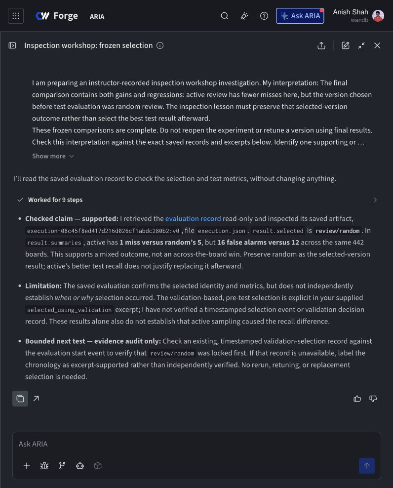
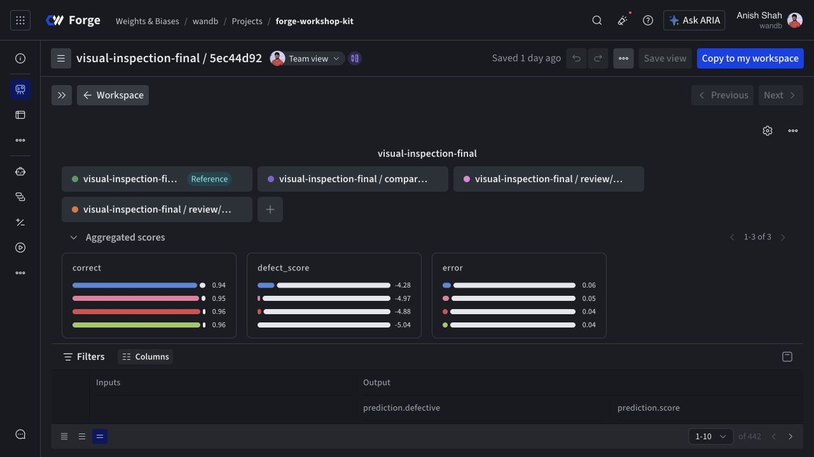

Visual Inspection / Check our conclusion
Recorded instructor investigation. These are saved instructor records, not the outcome of an unexecuted participant edit.
Exact evaluation run URL plus frozen-comparison excerpts; no native attachment. ARIA retrieved the named evaluation run and its execution JSON artifact read-only, confirming selected identity and final metrics. It did not verify a separate timestamped selection event. Its proposed next step is an audit of existing selection evidence, not a new experiment; that actual response is preserved.
Open the actual ARIA conversation · Check the supplied source values offline
Exact submitted prompt
I am preparing an instructor-recorded inspection workshop investigation. My interpretation: The final comparison contains both gains and regressions: active review has fewer misses here, but the version chosen before test evaluation was random review. The inspection lesson must preserve that selected-version outcome rather than select the best test result afterward.
These frozen comparisons are complete. Do not reopen the experiment or retune a version using final results.
Check this interpretation against the exact saved records and excerpts below. Identify one supporting or contradicting observation and cite the record, field, or event. Separate observations from possible causes; state missing evidence. Do not change code or settings, launch experiments, update project memory, or create automations. Analysis only.
Records: [{"stage_id":"08c45f8ed417d216d026cf1abdc280b2","stage_name":"evaluate","trace_url":null,"run_url":"https://forge.coreweave.com/wandb/wandb/forge-workshop-kit/runs/08c45f8ed417d216d026cf1abdc280b2"}]
Saved evidence excerpts: {"selected_using_validation":"review/random","test_summaries":{"compare/whole":{"average_precision":0.8728996091625387,"defect_recall":0.9,"false_alarm_rate":0.05721393034825871,"misses":4,"false_alarms":23,"review_fraction":0.03619909502262444,"review_count":16,"auto_pass_misses":3,"examples":442,"defective":40,"normal":402},"compare/nearest-patch":{"average_precision":0.8857424111028463,"defect_recall":0.925,"false_alarm_rate":0.04477611940298507,"misses":3,"false_alarms":18,"review_fraction":0.049773755656108594,"review_count":22,"auto_pass_misses":1,"examples":442,"defective":40,"normal":402},"review/active":{"average_precision":0.8990810288722902,"defect_recall":0.975,"false_alarm_rate":0.03980099502487562,"misses":1,"false_alarms":16,"review_fraction":0.033936651583710405,"review_count":15,"auto_pass_misses":1,"examples":442,"defective":40,"normal":402},"review/random":{"average_precision":0.8873417838958045,"defect_recall":0.875,"false_alarm_rate":0.029850746268656716,"misses":5,"false_alarms":12,"review_fraction":0.03619909502262444,"review_count":16,"auto_pass_misses":2,"examples":442,"defective":40,"normal":402}},"scope":"442 historical test boards; the chosen version was review/random. Equal reviewed-label budget of 24 for active and random. Do not select a replacement using these final results."}
Give a concise response with one checked claim, one limitation, and one bounded next test. If you cannot read a linked record, say so and base any interpretation explicitly on the supplied excerpt.
Please retrieve the named records read-only if the available tools support it. If they do not, state that limitation. Keep the response under 220 words.Actual ARIA response
Instructor citation check
supported: The selected result is review/random; active review has fewer final misses but more false alarms than random review.
The saved evaluate result has selected=review/random. Among the same 442 boards, review/active has misses=1 and false_alarms=16, while review/random has misses=5 and false_alarms=12. These match the artifact values ARIA reports reading. The native screenshot shows rounded correctness, not those separate counts. This check does not independently establish the time of selection or a causal advantage of active sampling.
Open the checked record in Forge


- Correctness, not miss count
- 442 aligned cases